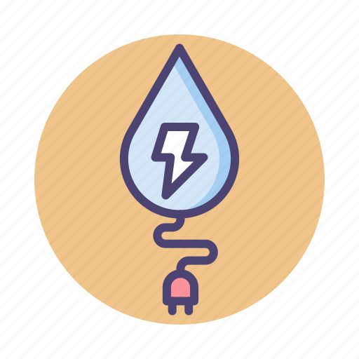
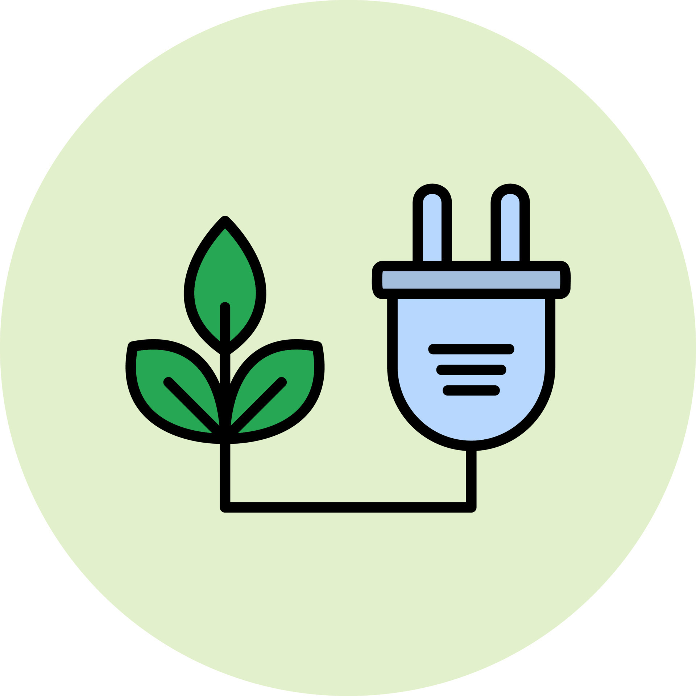
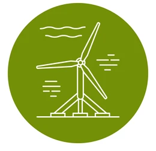

Types of Renewable Energy
Solar Energy

Solar energy is derived from the sun's radiation and can be converted into electricity or used for heating purposes.Photovoltaic (PV) cells or solar panels convert sunlight directly into electricity.Solar thermal systems use sunlight to heat water or other fluids, which can then be used for space heating, hot water, or electricity generation.
Examples:
- Rooftop solar panels on residential buildings
- Solar farms
- Solar water heaters
Wind Energy

Wind energy is generated by harnessing the kinetic energy of moving air masses, typically through wind turbines.Wind turbines consist of large blades mounted on a tower, which capture the wind's energy and convert it into electricity.Wind farms, consisting of multiple turbines, are often deployed in areas with consistent wind patterns.
Examples:
- Offshore wind farms in coastal regions
- Onshore wind turbines in rural areas
Hydro-Electric Power

Hydroelectric power is generated by harnessing the energy of flowing water, typically from rivers or dams.Water is directed through turbines, which spin generators to produce electricity.Large-scale hydroelectric dams can provide significant amounts of power to regional electrical grids.
Examples:
- Geothermal power plants in Iceland
- Geothermal heat pumps in residential and commercial buildings.
Biomass Energy

Biomass energy is produced from organic materials, such as wood, agricultural residues, or organic waste.Biomass can be burned directly for heat or converted into biofuels, biogas, or biochemicals through processes like combustion, fermentation, or gasification.
Biofuels, such as ethanol and biodiesel, can be used as transportation fuels or blended with conventional fuels.
Examples:
- Biomass power plants burning wood pellets
- anaerobic digesters producing biogas from organic waste.
Tidal Energy

Tidal energy is generated by capturing the kinetic energy of tidal currents caused by the gravitational pull of the moon and sun.Tidal turbines placed underwater harness the flow of water to generate electricity.
Tidal barrages or fences can also capture energy from the rise and fall of tides in coastal areas.
Examples:
- MeyGen tidal array in Scotland
- La Rance tidal power station in France